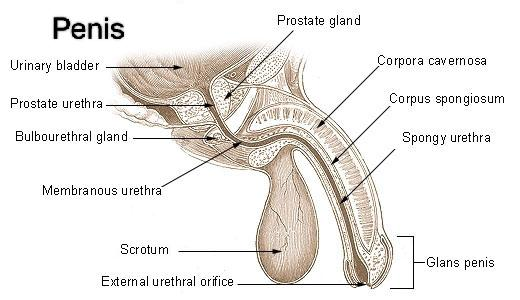

What is the penis?

The penis is the male organ for sexual intercourse. It contains many sensitive nerve endings, and it has three parts:
- Root. The root is the base of your penis. It attaches to the wall of your abdomen.
- Body (shaft). The body has a shape like a tube or cylinder. It consists of three internal chambers: the two larger chambers are the corpora cavernosa, and the third chamber is the corpus spongiosum. The corpora cavernosa run side by side, while the corpus spongiosum surrounds your urethra. There’s a special, sponge-like erectile tissue inside these chambers. The erectile tissue contains thousands of spaces. During sexual arousal, the spaces fill with blood, and your penis becomes hard and rigid (erection). An erection allows you to have penetrative sex. The skin of the penis is loose and stretchy, which lets it change size when you have an erection.
- Glans (head). The glans is the cone-shaped tip of the penis. A loose layer of skin (foreskin) covers the glans. Healthcare providers sometimes surgically remove the foreskin (circumcision).
What is a normal size of the penis?
Studies suggest that the average penis is about 3.5 inches (8.9 cm) when flaccid (soft) and a little more than 5 inches (13 cm) when erect.